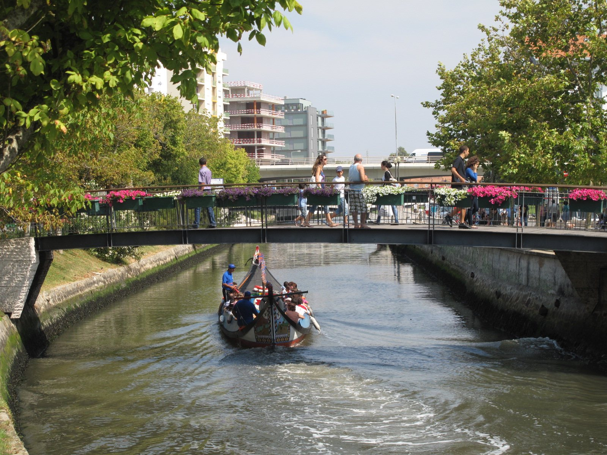

Spain · mountain bike
Camino Primitivo
six riding stages from Oviedo to Santiago, with real trail photos, map, daily climbing, flights, rental notes and cost ranges.

Portugal · city notes
Lisbon recs
Andi’s Lisbon recommendations, organized as a practical route guide from restaurants to viewpoints.

Portugal · day trip
Aveiro
canals, moliceiros, Costa Nova stripes and ovos moles — a lightweight Aveiro page for planning.
no image yet
Portugal · food
Porto Michelin
a standalone Porto dining shortlist, kept as part of the broader trips collection.